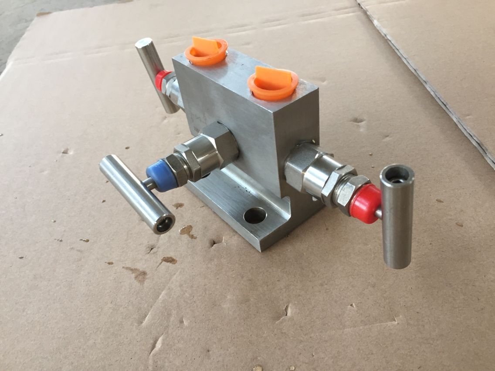

您只需一个电话，我们将提供合适的产品，竭诚为新老客户提供优质的服务！
产品分类
新闻中心
网站当前位置：网站首页 > 新闻中心- 仪器仪表行业“十二五”规划之行业关键技术

-
仪器仪表行业，是自动化领域的关键行业。在过去数年中，随着中国自动化应用环境的不断发展，仪器仪表行业的面貌日新月异，很多这一领域的企业也得到了快速的发展。当前，仪器仪表行业面临着新的发展时期，这一行业的“十二五”规划(草案)，也根据新时期的要求，提出了重点发展的若干关键技术，这对行业未来发展无疑有着重要的指导意义。
新兴传感器技术
传感器作为传感网(物联网)的基础元件，在今后将有十分广阔的发展前景。目前新型传感器技术包括固态硅传感器技术、光纤传感器技术、生物芯片技术、基因芯片技术、图像传感器技术、全固态惯性传感器技术、多传感器技术等。“十二五”将以智能传感器作为重点，进行关键技术攻关。
在这一领域，重点发展新原理、新效应的传感技术，传感器智能技术，传感器网络技术，微型化和低功耗技术，以及传感器阵列及多功能、多传感参数传感器的设计、制造和封装技术。
工业无线通信网络技术
工业无线通信网络作为有线工业通信网络的补充，已经得到普遍认同。我国在工业无线通信网络方面已经取得一定成果，继续加强开发有可能在这方面走在世界前列。
而在这一领域，宜重点关注工业无线通信网络标准的制订，以及工业无线通信网络认证技术。
功能安全技术及安全仪表
功能安全技术及安全仪表是国际上最近发展的新技术，目的是防止工业设施产生异常事故，以致危及人身与设备的安全。这项技术及相关仪表产品已经获得用户的广泛关注。我国大型石化工程建设项目已经规定必须事先进行功能安全的评估。我国工业设施突发事故发生比较频繁，研究安全仪表技术有很重要的意义。
这一领域重点发展的产品包括：达到整体安全等级SIL3的控制系统、温度变送器、压力/压差变送器、电动执行机构/阀门定位器的开发与应用，同时也包括安全仪表系统评估技术方法研究和评估工具的开发。
精密加工技术和特殊工艺技术
我国高中档检测设备与国外的差距很大程度上是精密加工和特殊工艺技术的差距。当前的重点是多维精密加工工艺，精密成型工艺，球面、非球面光学元件精密加工工艺，晶体光学元件磨削工艺，特殊光学薄膜设计与制备工艺，精密光栅刻划复制工艺，特殊焊接、粘接、烧结等特殊连接工艺，专用芯片加工技术，MEMS技术，全自动微量、痕量样品分析与处理技术等。
分析仪器功能部件及应用技术
对分析仪器的关键部件，如检测器、四级杆、高压泵、阀门、磁体、专用光源和电源、全自动进样器、长寿命高灵敏电极、中阶梯光栅、高精度电子引伸计等关键零部件进行攻关，提高仪器整机的稳定性和可靠性。同时开发针对不同应用领域的谱图和数据库。
智能化技术
智能化技术的特点是：具有自校准、自检测、自诊断、自适应功能;具有复杂运算和误差修正的数据处理能力;具有自动完成指定测量任务的功能;用于科学测试仪器和控制系统的专家系统软件等。
系统集成和应用技术
当前应重点发展不同生产厂商控制系统之间的无缝连接集成技术;大型项目的自动化设备主供应商(MIV)应具备的项目策划、设计、组织、采购、验收、调试等项目管理技术。 -
上一张：上下游产业前景大好 为仪器仪表行业发展注入动力
下一张：暂无相关信息！